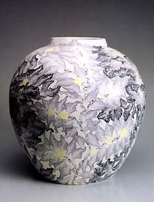
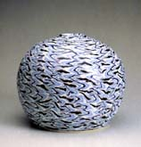

| Matsui Kosei
Japanese Master of Neriage
Matsui
Kosei is a master of Neriage,
a time-consuming technique, whereby different colored clays are
mixed, rolled out, cut and reassembled.
Matsui was born in 1927 and started his studies in
ceramics in 1946. In 1957, he became a priest at the Getsusoji Temple,
where in 1960 he built a kiln so he could research traditional Chinese,
Japanese and Korean ceramics.
Matsui subsequently became famous for his neriage
wares, which are based on a technique from the Tang Dynasty ( 8th
C China). In 1993, he was declared a Living
National Treasure. Since 1993, he has also been a permananent
member of the steering committee of the Ceramic
Society of Japan . His son Koyo
Matsui, started an apprenticeship with his father in 1985
and, carrying on the tradition, has himself become an accomplished
practitioner of neriage.

Related Links:
JAPAN - Ceramics and Photography,
Past and Present
More Articles
More Artists of the Week
|